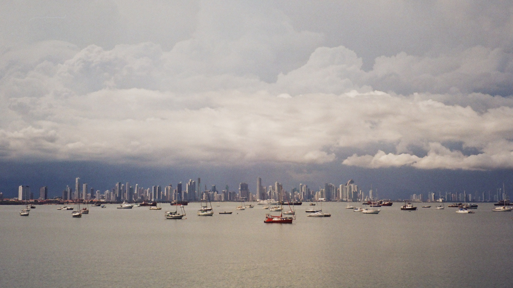
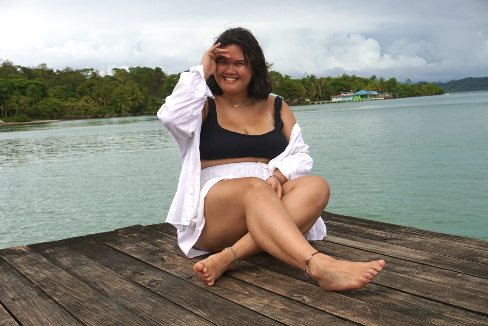
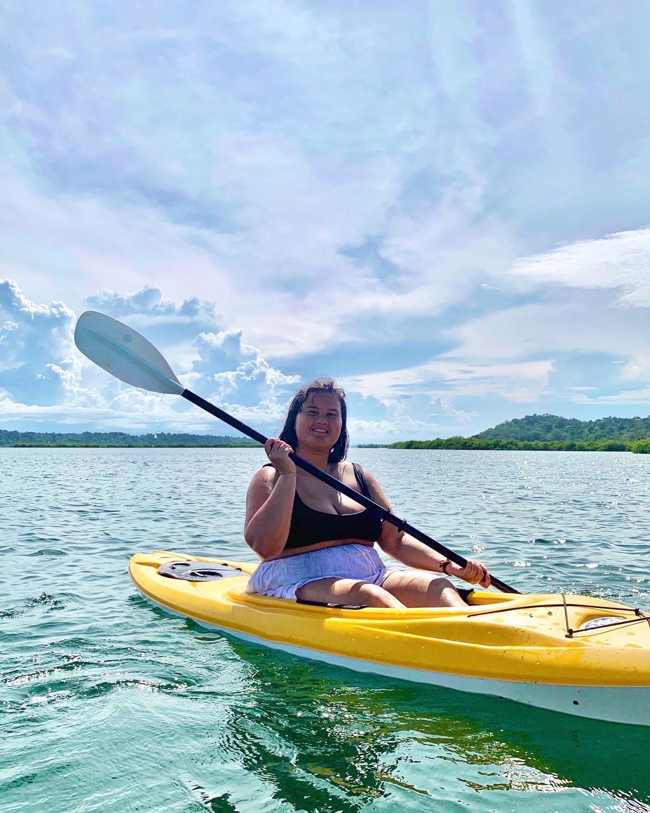
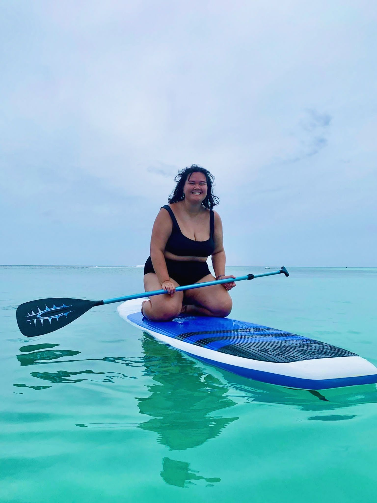

De route voor backpacken in panama & aruba
Bocas del toro (10 dagen)
Dag 1: Bij aankomst in Panama ben ik ingecheckt in mijn hotel en heb ik even de tijd genomen om uit te rusten van de reis.
Dag 2: Vandaag heb ik nog rustig aan gedaan om volledig te kunnen ontspannen op het strand en te genieten van het mooie weer.
Dag 3: Ik heb mijn tijd op het strand gebruikt om lekker bruin te worden en te ontspannen.
Dag 4: Op het strand heb ik veel gekletst met andere backpackers en lokale mensen, wat erg interessant was.
Dag 5: Vandaag heb ik een bezoek gebracht aan Star Fish Beach en heb ik ook wat winkeltjes verkend.
Dag 6: Ik heb deelgenomen aan enkele excursies naar de omliggende eilanden, waar ik nieuwe avonturen heb beleefd.
Dag 7: Met de fiets ben ik naar Bluff Beach gegaan en heb ik genoten van het prachtige uitzicht en de ontspannen sfeer.
Dag 8: Een bioluminescente tour stond op het programma, waarbij ik de magische gloed van het water in het donker heb ervaren.
Dag 9: Ik ben naar Red Frog Beach geweest en heb daar gekajakt, waarbij ik verliefd ben geworden op deze activiteit.
Dag 10: Vandaag vlieg ik naar Panama City, waar het volgende deel van mijn avontuur begint.
Panama city (7 dagen)
Dag 1: Ik ben ingecheckt in mijn hotel en heb de tijd genomen om uit te rusten van mijn reis.
Dag 2: Vandaag heb ik een bezoek gebracht aan Albrook en Miraflores locks, waar ik heb genoten van het bekijken van de scheepslift en het leren over het Panamakanaal.

Dag 3: Ik heb de historische wijk San Felipe verkend, waar ik heb rondgewandeld en enkele interessante bezienswaardigheden heb bezocht.
Dag 4: Vandaag heb ik langs de Cinta costera gelopen, een populaire promenade met prachtig uitzicht op de oceaan.
Dag 5: Ik heb de Amador Causeway bezocht, een schilderachtige weg die de eilanden met elkaar verbindt en waar ik heb genoten van het mooie uitzicht op de skyline van Panama City. We hadden een dubbele fiets gehuurd om hier langs te fietsen.

Dag 6: Ik heb de Cerro Ancon Reserva bezocht, waar ik een mooie wandeling heb gemaakt en heb genoten van het prachtige uitzicht over de stad.
Dag 7: Vandaag vlieg ik naar Aruba, waar ik mijn avontuur zal voortzetten.
Aruba (7 dagen)
Dag 1: Na aankomst in Aruba ben ik ingecheckt in mijn hotel en heb ik meteen genoten van een verfrissende nachtzwem in de zee.
Dag 2: Vandaag heb ik de stad Oranjestad verkend, waar ik de kleurrijke gebouwen heb bewonderd, de lokale markten heb bezocht en heb genoten van de gezellige sfeer.

Dag 3: Ik heb de dag doorgebracht met relaxen op het mooie strand, waar ik heb genoten van het warme zand en de verkoelende zee.
Dag 4: Een bezoek aan Baby Beach stond op de planning, een prachtig strand met ondiep water waar ik heb gezwommen en ontspannen heb genoten van de omgeving.
Dag 5: Vandaag heb ik mijn snorkeluitrusting tevoorschijn gehaald en heb ik de kleurrijke onderwaterwereld van Aruba verkend, waar ik tropische vissen en prachtige koraalriffen heb gezien.
Dag 6: Ik heb ervoor gekozen om een tattoo te laten zetten, als een blijvende herinnering aan mijn tijd in Aruba. Daarna heb ik lekker bij het zwembad van het hotel gezond.
Dag 7: Vandaag is het tijd om terug naar Nederland te vliegen, waar ik met mooie herinneringen terugkijk op mijn avontuur in Aruba.